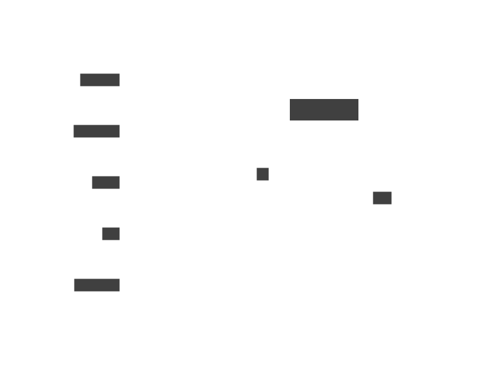

Carport
Dependency Graph from Python imports (CARPORT).


Installation
Usage
'digraph {\n"carport.vis";\n"carport.core";\nnetworkx;\npathlib;\nast;\nkroki;\ngraphviz;\n"carport.vis" -> "carport.core" [key=0];\nnetworkx -> "carport.core" [key=0];\npathlib -> "carport.core" [key=0];\nast -> "carport.core" [key=0];\nkroki -> "carport.vis" [key=0];\ngraphviz -> "carport.vis" [key=0];\n}\n''\n vars: { \n d2-config: { \n layout-engine: elk \n } \n }\n direction: right\n **.style.border-radius: 99\n *.style.font: mono\n \npathlib -> carport.core\ngraphviz -> carport.vis\nsubprocess -> carport.vis\nast -> carport.core\ncarport.vis -> carport.core\nkroki -> carport.vis\nnetworkx -> carport.core\nio -> carport.core\nIPython -> carport.vis\nio: null\nIPython: null\npprint: null\nsubprocess: null'Code

Code
# for large graphs, you can use gravis
#! pip install gravis
import networkx as nx
import gravis as gv
g = depg.to_nx(ignore_nodes=ignore_nodes)
layout = nx.circular_layout(g, scale=4*len(g)**1.05)
for node_id, (x, y) in layout.items():
node = g.nodes[node_id]
node['x'], node['y'] = x, y
gv.d3(g, edge_curvature=1, node_hover_neighborhood = True, use_edge_size_normalization=True)TODOs:
[] imports concerning __init__.py
[] py_d2 to d2 (like graphviz to graphviz)
Statistics


Copyright
Copyright © 2024 onward Felidz. All rights reserved, with certain parts of the project specifically licensed and subject to different terms and conditions, e.g., source code of the project under the Apache-2.0 license; you may not use this project except in compliance with the license.
Citation
BibTeX citation: